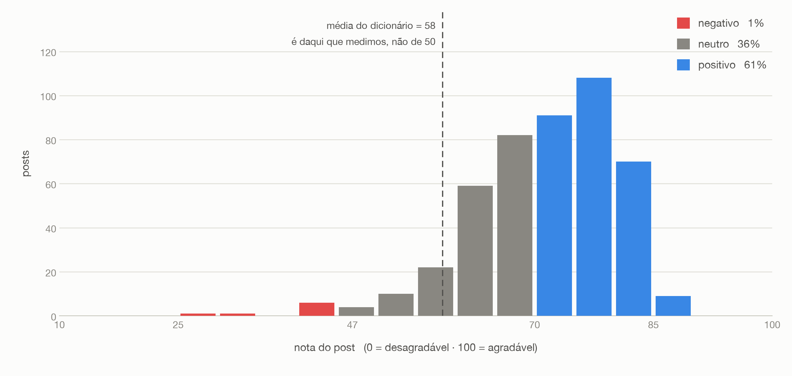

Cada palavra do dicionário ANEW já vem com uma nota de agrado dada por voluntários. A nota de um post é a média das notas das suas palavras.
Um programa nosso baixa da API do Mastodon os posts em inglês que citam Argentina, Buenos Aires ou Patagônia, e confere o idioma de cada um.
As 1.034 palavras do ANEW têm nota de 0 a 100.
love = 99 · news = 60 · terrible = 22.
Reduzimos cada palavra do post à forma do dicionário, para que
loved encontre love.
Post com menos de 3 palavras conhecidas não é classificado: uma palavra solta decide errado com frequência.
A escala vai de 0 a 100, então o meio parece ser 50. Mas o ANEW não é um dicionário equilibrado: 62% das suas palavras estão acima de 50, e a média delas é 58.
Por isso comparamos cada post com a média do próprio dicionário. Assim, “positivo” quer dizer mais agradável que a palavra média do ANEW — e não mais agradável que um meio arbitrário da escala.
Sem essa correção, o resultado mediria o formato do dicionário em vez da opinião das pessoas.
463 posts classificados, de 905 em inglês. Seis em cada dez são positivos e quase quatro ficam no meio da escala. Crítica forte é rara: apenas 2%.
